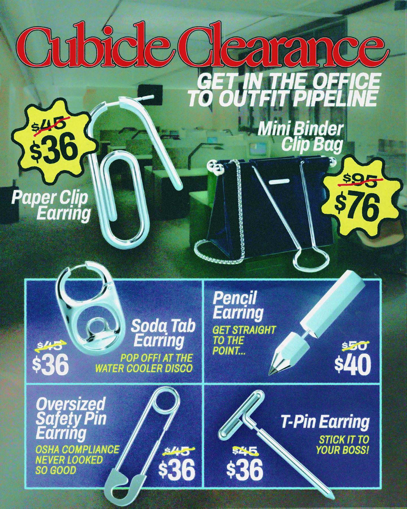

"SÍ, ESA JOYA QUE MIRAS ES UN HOMENAJE A TU PASTA DE DIENTES FAVORITA".

"EN STUDIOCULT NOS TOMAMOS NUESTROS DISEÑOS TONTOS MUY EN SERIO".
Somos una marca con sede en Nueva York que crea joyas y accesorios inspirados en pequeños fragmentos de recuerdos compartidos.
A través de nuestro proceso de diseño, recontextualizamos las emociones, pensamientos y sensaciones que nuestra sociedad experimenta con conceptos cotidianos.
Cada creación cuenta una historia colectiva que esperamos conecte con personas de todo tipo, ofreciendo diseños que resulten tanto atractivos como... raros, muy raros.
Todo comienza con una observación atenta del día a día: esos objetos, ideas y experiencias que, aunque familiares, suelen pasar desapercibidos. Nos preguntamos cómo podemos darles una nueva vida a través de diseños inesperados y llenos de significado.
Nuestro enfoque creativo explora maneras ingeniosas de encapsular emociones y recuerdos en formas que desafían la estética convencional. Desde los bocetos iniciales hasta el producto terminado, cada detalle es pensado para provocar una sonrisa, despertar nostalgia y, en ocasiones, cuestionar lo que creemos que sabemos sobre el mundo que nos rodea.
Para nosotros, el diseño es más que estética: es una conversación. Queremos que cada pieza no solo se use, sino que también se comparta, se admire y, sobre todo, se disfrute. Porque creemos que la mejor joya no solo adorna, sino que también cuenta historias que merecen ser escuchadas.